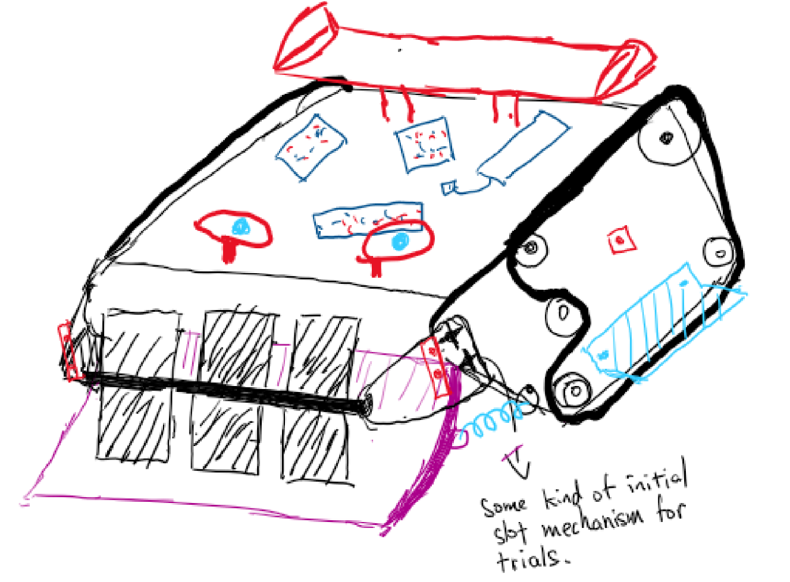
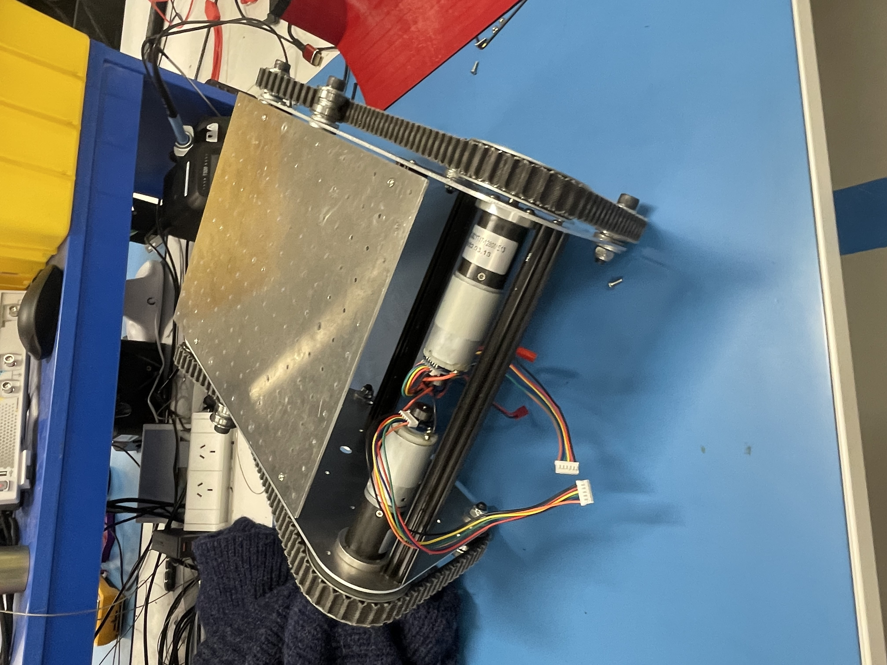
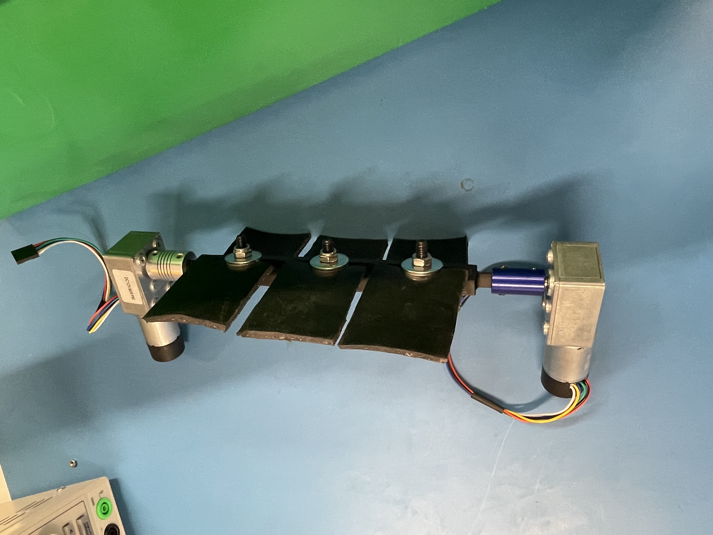
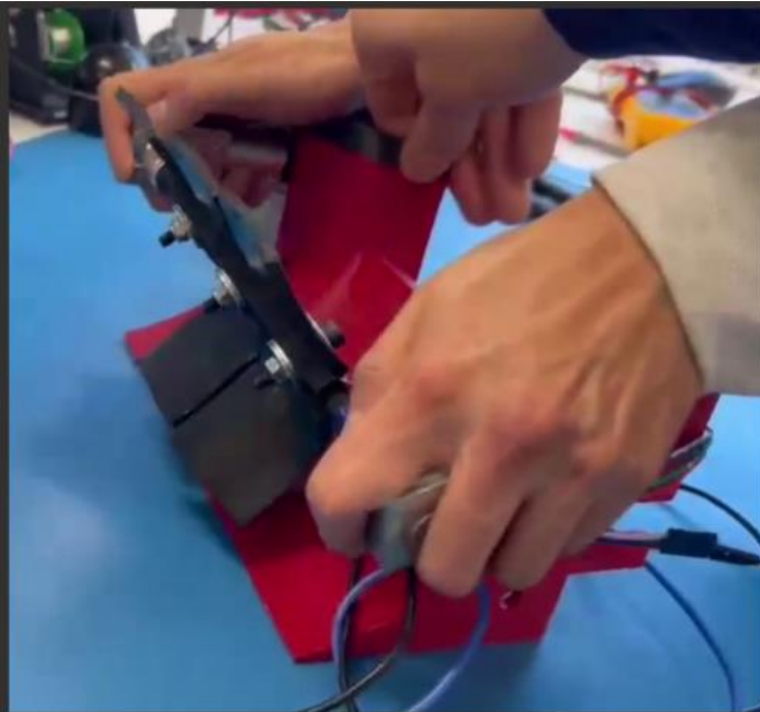

Robotics / Mechanical design
RoboCup Collection Robot
A collection robot our team, Backyard Mechanics, is building for RoboCup. It drives up to weights on the floor and a rotating drum sweeps them up a ramp and into the robot. I proposed the drum intake the team chose, set out the general arrangement, and built a rough proof of concept before we committed to it. We have just finished the concept stage and are moving into the build.
Concept and architecture
- Proposed a rotating drum with rubber flaps as the intake: the drum spins and the flaps sweep each weight off the floor and up a fixed ramp into the robot. The team picked it to run with.
- Kept the mechanism deliberately simple, few moving parts and easy to build and maintain, which keeps the final design reliable rather than fragile or over-complicated.
- A combine-harvester style intake had been done before, but not the rubber-flap version, partly because the rules this year restricted elastomeric materials above an aspect ratio of 5. Teammates were leaning towards an electromagnet-based intake, so proving the flap drum worked, and was not over-complicated, settled the direction.

- Set out the general arrangement in an overhead diagram: the drum intake, a sorting stage to keep the real weights and reject the dummies, and the ejection path. The team is building to that layout.

- Used the given competition kit for the major parts, side plates and beams, motors, sensors, battery, motor driver and controller, unless there was a clear reason to use our own. The drum intake, sorting mechanism and drive wheels are the parts we design and build ourselves.

Proof of concept
- Sourced hardware-store parts, 3D printed the drum and flaps, and assembled a rough proof of concept in an afternoon.

- Tested it on a scrap-bin ramp, steeper, taller, rougher and narrower at the top than the one we plan to use, so it stood in for a worst case. The drum still dragged the weights up, which said the real ramp should be easier.
- Watched the flaps deform around each weight as the drum turned, which is what grips and lifts it rather than just shoving it.

The drum intake I proposed was the concept the team chose, and the proof of concept lifted weights up a worst-case ramp before we committed to it. Now into the build.
Learned
Learned that a rough prototype settles an argument faster than talking does. Two of us wanted different intakes, and building the simplest version that could prove or kill the idea was quicker than debating it. The proof of concept was scrap-bin parts and basic geometry, but it answered the one thing that mattered, could the drum lift a weight up the ramp, before anyone spent real time making it neat. I like working that way: build the simplest thing that proves the idea, put it in front of people, then refine.
← Back to projects